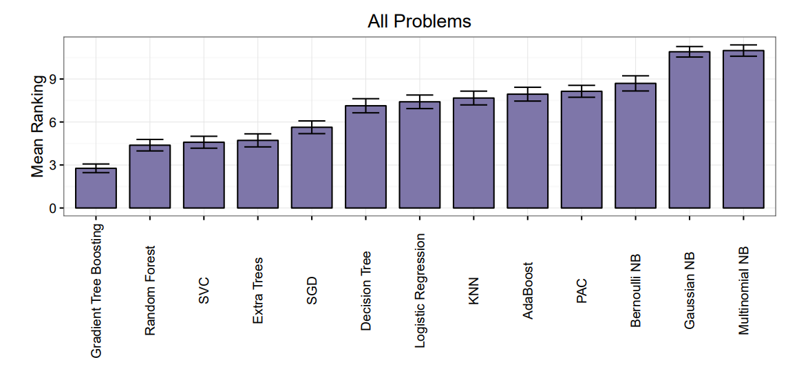
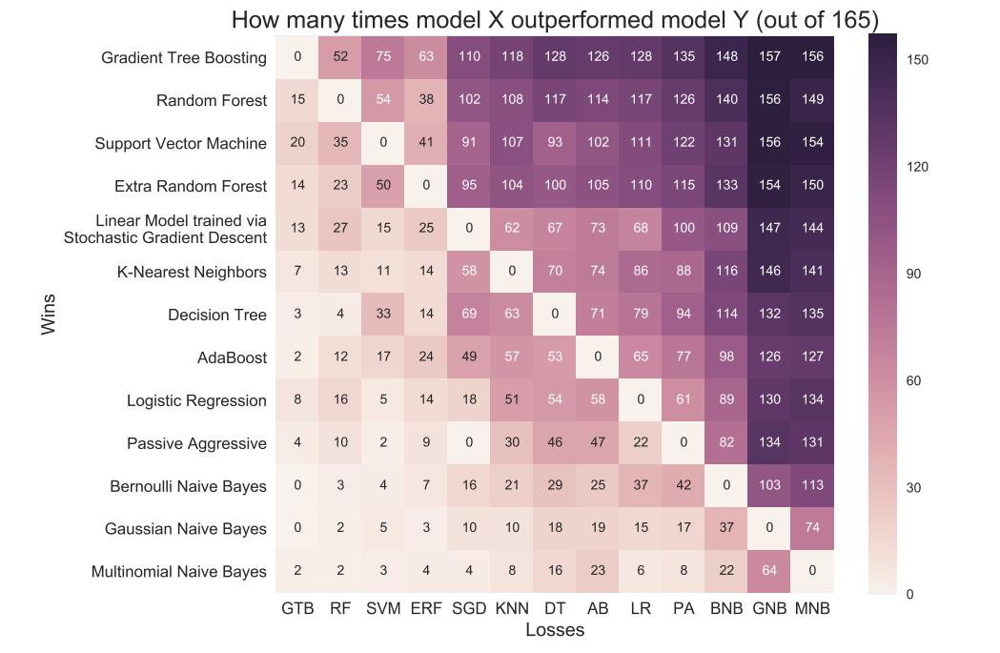
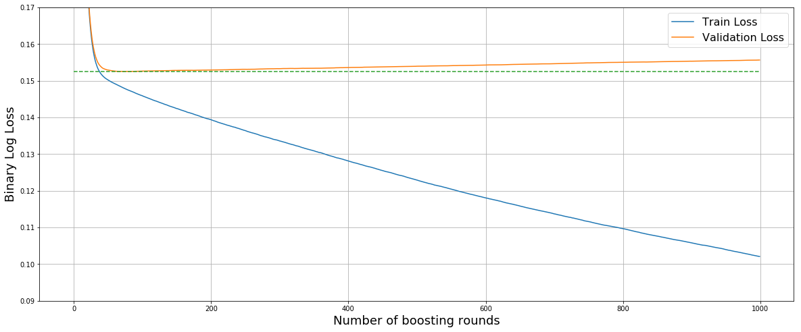
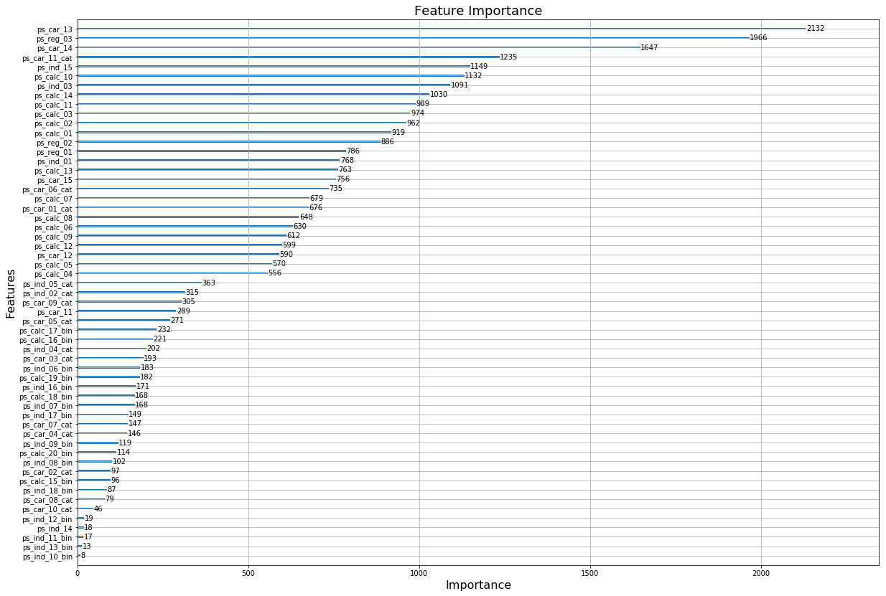

class: center, middle # Using Gradient Boosting Machines in Python ### Albert Au Yeung ### PyCon HK 2017, 4th Nov., 2017 --- # Objectives of this Talk * To give a brief introduction of [gradient boosting](https://en.wikipedia.org/wiki/Gradient_boosting) * To introduce how to use [LightGBM](https://github.com/Microsoft/LightGBM) in Python * To share some tips on [tuning LightGBM models](https://github.com/Microsoft/LightGBM/blob/master/docs/Parameters-Tuning.rst) --- # What is Machine Learning? * Given some input `\(X\)` and ouptut `\(y\)`, find a function `\(F(X)\)` that maps `\(X\)` to `\(y\)`. * Example: given (<span style="color:#CC4455">location, size</span>) (`\(X\)`), predict the <span style="color:#CC4455">price</span> of a house (`\(y\)`). .center[<img src="img/ml.png" style="width: 75%; margin-top: 2em;" />] --- # Which ML Algorithm Should You Use? - Linear regression, decision trees, random forest, gradient boosting, logistic regression, kNN, naive Bayes, neural networks... - For *computer vision* related tasks, *deep learning* are often the most useful. How about other problems with **<span style="color:#3366AA">explicit features</span>**? - E.g: [House Price Prediction](https://www.kaggle.com/c/house-prices-advanced-regression-techniques), [Insurance Claim Prediction](https://www.kaggle.com/c/porto-seguro-safe-driver-prediction), [Production Line Quality Prediction](Production Line) - What do the competition winners use? - [Profiling Top Kagglers: Owen Zhang](http://blog.kaggle.com/2015/06/22/profiling-top-kagglers-owen-zhang-currently-1-in-the-world/) - [A Kaggle Master Explains Gradient Boosting](http://blog.kaggle.com/2017/01/23/a-kaggle-master-explains-gradient-boosting/) --- class: center, middle  Ref: Fig 1. Olson et al. [Data-driven Advice for Applying Machine Learning to Bioinformatics Problems](https://arxiv.org/abs/1708.05070). 2017. --- class: center, middle  Ref: Fig 2. Olson et al. [Data-driven Advice for Applying Machine Learning to Bioinformatics Problems](https://arxiv.org/abs/1708.05070). 2017. --- class: split-60 # What is Boosting? .column-left[ * In general, [boosting](https://en.wikipedia.org/wiki/Boosting_%28machine_learning%29) is a method that trains a number of relatively **weak** classifiers and **combine** their predictions together, in the hope of generating more accuracy predictions * Thus, boosting implies [ensemble learning](https://en.wikipedia.org/wiki/Ensemble_learning) * Example: [AdaBoost](https://en.wikipedia.org/wiki/AdaBoost) - in each iteration, previously <span style="color: #4466DD">wrongly</span> classified samples will have <span style="color: #4466DD">higher weights</span> when training the next classifier. ] .column-right[ <img src="img/boosting.png" width="98%"> (Ref: [Quick Introduction to Boosting Algorithms in Machine Learning](https://www.analyticsvidhya.com/blog/2015/11/quick-introduction-boosting-algorithms-machine-learning/)) ] --- # What is Gradient Boosting? * To train a model is equivalent to finding a suitable function `\(F(X)\)`, such that given input data `\(X\)`, it will output correct predictions `\(y = F(X)\)` * Let's assume that we have trained a model `\(F_1(X)\)`, and given training data `\(X_T\)`, it outputs `\(y_p\)`, while the ground truth is `\(y_T\)` * In most cases, the model would make some mistakes: `\(y_T - y_p\)` * What can we do next to **<span style="color: rgb(22, 113, 155)">improve</span>** our model? --- # An Example * Suppose the performance of our first model is as follows: Rooms | Size | Rent | Predicted (`\(F_1(X)\)`) | Error (`\(y_T\)` - `\(F_1(X)\)`) -------|------|-------------|-----------|------- 1 | 20 | 12,000 | 13,000 | -1,000 1 | 30 | 14,000 | 13,500 | 500 2 | 40 | 16,500 | 15,800 | 700 3 | 85 | 24,000 | 25,500 | -1,500 3 | 80 | 26,000 | 25,300 | 700 * We would like to have another model that **corrects** the errors of the first model! * In other words, we want `\(F_2(X)\)` = `\(y_T\)` - `\(F_1(X)\)` --- # What is Gradient Boosting? * The combination of the 1st and the 2nd model may still make some mistakes * We can apply this method repeatedly, until `\(F_1(X) + F_2(X) + ... + F_N(X)\)` is good enough * In general, larger `\(N\)` results in more accuracy results, but may also lead to overfitting. --- # Training Gradient Boosting Models ## A number of libraries available in Python * scikit-learn's [GradientBoostingClassifier](http://scikit-learn.org/stable/modules/generated/sklearn.ensemble.GradientBoostingClassifier.html#sklearn.ensemble.GradientBoostingClassifier) / [GradientBoostingRegressor](http://scikit-learn.org/stable/modules/generated/sklearn.ensemble.GradientBoostingRegressor.html#sklearn.ensemble.GradientBoostingRegressor) * [XGBoost](http://xgboost.readthedocs.io/en/latest/) * Microsoft's [LightGBM](https://github.com/Microsoft/LightGBM) * [h2o](https://github.com/h2oai/h2o-3) * Spark MLib's [Gradient-Boosted Trees](https://spark.apache.org/docs/2.1.0/ml-classification-regression.html#gradient-boosted-trees-gbts) --- # LightGBM * [LightGBM](https://github.com/Microsoft/LightGBM) - An open source gradient boosting framework created by Microsoft Research. * Supports *classification*, *regression* and *ranking* tasks * Much more efficient compared to other implements such as [XGboost](https://github.com/dmlc/xgboost) and [scikit-learn](http://scikit-learn.org/stable/modules/classes.html#module-sklearn.ensemble) * Support parallel training on **multi-core**, **multi-machine** and **GPUs** --- # Python API Example ```python import lightgbm as lgb from sklearn.metrics import accuracy_score from sklearn.model_selection import train_test_split # Assume X, y are the training data set X_train, X_test, y_train, y_test = train_test_split(X, y, test_size=0.2, random_state=101) # Create dataset for LightGBM lgb_train = lgb.Dataset(X_train, label=y_train) lgb_test = lgb.Dataset(X_test, y_test, reference=lgb_train) # Set parameters params = { "objective": "multiclass", "metric": "multi_logloss", "num_leaves": 31 } ``` --- # Python API Example ```python # Train booster = lgb.train(params, lgb_train, num_boost_round=100, valid_sets=[lgb_train, lgb_test], early_stopping_rounds=10) # Check performance on test set y_pred = booster.predict(X_test, num_iteration=booster.best_iteration) print("Accuracy: %.4f" % accuracy_score(y_test, y_pred)) # Persist model booster.save_model("gbm.model.txt") ``` --- # scikit-learn Style API ```python import lightgbm as lgb # Create classifier gbm = lgb.LGBMClassifier(objective="multiclass", num_leaves=31, n_estimators=100) # Train gbm.fit(X_train, y_train, eval_set=[(X_test, y_test)], eval_metric="multi_logloss", early_stopping_rounds=5) # Generate predictions y_pred = gbm.predict(X_test, num_iteration=gbm.best_iteration_) ``` --- # LGB: Important Parameters * **num_leaves** - Maximum number of leaves in a tree. (10 to 100) * **min_child_samples** - Minimum data points required in a leaf node. (10 to 1000) * **bagging_fraction** - Fraction of samples for training in each round (0 to 1) * **bagging_freq** - How frequent do we use bagging (1 to 10) * **feature_fraction** - Fraction of features for training in each round (0 to 1) * **lambda_l1** / **lambda_l2** - Regularisation parameters (0.01 to 0.1) * **min_split_gain** - When should we split a leave node (0.001 to 0.1) <br/><br/> <span style="font-size: 1.2em"> Reference: [LightGBM - Parameter Tuning](http://lightgbm.readthedocs.io/en/latest/Parameters-Tuning.html) </span> --- # Early Stopping * **Training error** decreases as number of boosting rounds increases * But too many boosting rounds may lead to **overfitting** * A validation data set can be used to find out the optimal number of boosting rounds ```python evals_result = {} # Use to store the metrics of each round on the validation set booster = lgb.train(params, lgb_train, num_boost_round=100, valid_sets=[lgb_train, lgb_test], evals_result=evals_result, early_stopping_rounds=10) ``` --- # Early Stopping - Avoid Overfitting <center>  </center> --- # Feature Importance feature_importance(importance_type='split', iteration=-1)[source] Get feature importances. Parameters:importance_type (string, optional (default="split")) – How the importance is calculated. If “split”, result contains numbers of times the feature is used in a model. If “gain”, result contains total gains of splits which use the feature. Returns:result – Array with feature importances. Return type:numpy array --- <center>  </center> ```python booster = lgb.train(params, train_data, num_boost_round=100) lgb.plot_importance(booster) ``` --- # LGB: Parallelisation * LightGBM supports learning on <span style="color: #4466DD">multi-core</span>, <span style="color: #4466DD">multi-machine</span>, and <span style="color: #4466DD">GPU</span> --- # Installing GPU-enabled LightGBM * Method to install GPU-enabled LightGBM (worked on AWS GPU instance)<br/> (Ref: https://github.com/Microsoft/LightGBM/issues/715) ```bash $ git clone --recursive https://github.com/Microsoft/LightGBM $ cd ./LightGBM $ mkdir build; cd build $ sudo cmake -DUSE_GPU=1 -DOpenCL_LIBRARY=/usr/local/cuda-8.0/lib64/libOpenCL.so \ -DOpenCL_INCLUDE_DIR=/usr/local/cuda-8.0/include/ .. $ sudo make -j2 $ cd ../python-package; sudo python3 setup.py install --precompile ``` --- # References * Ben Gorman. [A Kaggle Master Explains Gradient Boosting](http://blog.kaggle.com/2017/01/23/a-kaggle-master-explains-gradient-boosting/). 2017 --- class: center, middle ## Thank You! ### http://www.albertauyeung.com<br/>albertauyeung@gmail.com ### Slides Avaliable at:<br/> http://talks.albertauyeung.com/pycon2017-gradient-boosting/